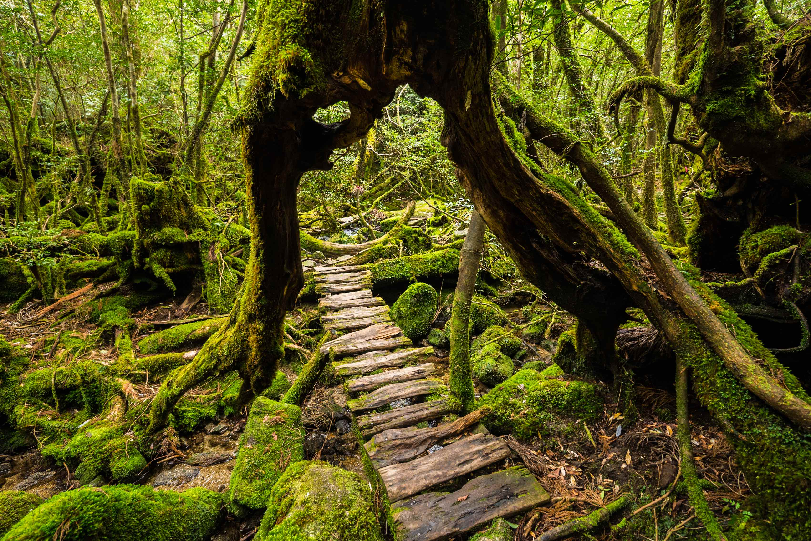

What to do on Yakushima Island?
Yakushima is a beautiful island with a pleathora of things to do. From relaxing on the beaches, to going on hikes to check out the waterfalls and yakusugi trees, and trying local foods, there is something for everyone on this island. If you would like to discover more to do while visiting Yakushima Island, click the image to the left.
Where is Yakushima Island?
Yakushima Island is an island located approximately 300 kilometers off of the southern tip of Japan. If you would like to see a more detailed map of Yakushima Island, click the image to the right.
How to get to Yakushima Island?
You can get to Yakushima Island via direct flight to Yakushima airport or by taking the bullet train to Kagoshima and then transfering onto a ferry for the remainder of the trip to Yakushima. If you want to learn more about your options of travel to and around the island, click the image to the left.


Want to see more images of Yakushima Island? Click the image to the right!